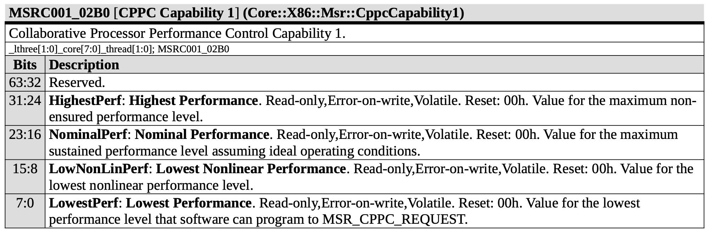
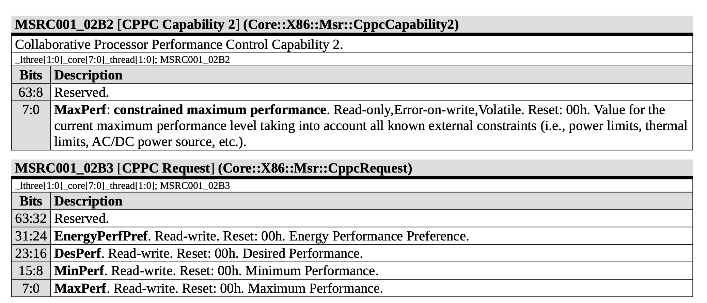

Linux 大小核的调度算法探究¶
背景¶
最近看到一些关于 Linux 大小核调度算法的一些博客，考虑到大小核目前已经比较常见了，因此做一些现状的探究。
现象¶
Intel¶
首先可以做一下实验，用 stress --cpu N 启动 N 个计算负载，看看这些线程都会被分配到哪些核上。在 Intel Core i9-14900K 上实验，这个 CPU 是 8P+16E，8P 对应 0-15 核，超线程的核的 ID 是连号的，16E 对应 16-31 核，观察到下面的结果：
N=1时，主要调度到 12-15 核里其中一个，这对应的是 8P 中的最后 2PN=2时，主要调度到 12-13 核里其中一个，以及 14-15 核里其中一个，同样也是 8P 中的最后 2P，每个 P 上分配一个任务N=3时，在N=2的基础上，在 0-11 核里再调度一个N=4..=8时，在N=2的基础上，在 0-11 核里调度剩下的任务，但不会分配到一个 P 核的两个逻辑核上N=9..=24时，在N=8的基础上，在 16-31 核里调度剩下的任务N=25..=32时，在N=24的基础上，把任务分配到 P 核的第二个逻辑核上
可见在调度时，按照如下的优先级：
- 最后 2 个 P 核
- 其余 6 个 P 核
- E 核
- P 核的超线程
可见 P 核内部也有优先级不同，最后 2 个 P 核具有更高的优先级，而它们的 Boost 频率确实也更高：
$ cat /sys/devices/system/cpu/cpufreq/policy0/scaling_max_freq
5700000
$ cat /sys/devices/system/cpu/cpufreq/policy12/scaling_max_freq
6000000
6 个 P 核的最大频率设定为 5.7 GHz，2 个 P 核的最大频率设定为 6.0 GHz。因此这两个 6.0 GHz 的 P 核会被优先调度。此时再来看 Intel® Core™ i9 processor 14900K Spec:
- Max Turbo Frequency: 6 GHz
- Intel® Thermal Velocity Boost Frequency: 6 GHz
- Intel® Turbo Boost Max Technology 3.0 Frequency: 5.8 GHz
- Performance-core Max Turbo Frequency: 5.6 GHz
- Performance-core Base Frequency: 3.2 GHz
可以看到，官方宣传的最高 Turbo 频率是 6 GHz，但实际上只有两个 P 核可以达到。
但并非所有平台在默认情况下都能达到宣称的最高频率的。例如在 Dell R730 上，Xeon E5-2680 v4 默认情况下只能达到 2.9 GHz 的 Boost 频率，但按照 Intel 官网，这个 CPU 的 Boost 最高可以达到 3.3 GHz。当然了，2.9 GHz 是全核能够达到的 Boost，3.3 GHz 只能少数的核达到，而服务器场景下，大多时间是跑多核负载，限制到 2.9 GHz 也可以理解。如果想要 3.3 GHz，就需要进 BIOS 设置，把调频交给 OS，C-State 也全部放开，这样就可以实现 3.3 GHz 了。这里比较重要的是要打开 C6，因为把空闲的核放到 C6 以后，才能把单核跑到最高的频率。
AMD¶
在 AMD Ryzen 9 9950X 上进行类似的实验，这个 CPU 有 16 个核，0 核和 16 核对应一个物理核，其他依此类推，0-7 是一个 CCD，8-15 是另一个 CCD，得到的结果如下：
N=1时，主要调度到 4，9 和 20 核里其中一个N=2时，主要调度到 0 和 16 核里其中一个，9 和 25 核里其中一个N=3时，在N=2的基础上，调度到 4 和 20 核里其中一个N=4时，在N=3的基础上，调度到 11 和 27 核里其中一个N=5时，在N=4的基础上，调度到 5 和 21 核里其中一个N=6时，在N=5的基础上，调度到 8 和 24 核里其中一个N=7时，在N=6的基础上，调度到 3 和 19 核里其中一个N=8时，在N=7的基础上，调度到 10 和 26 核里其中一个
查看它们的 scaling_max_freq，会发现都是相同的 5.752 GHz。查看它们的 amd_pstate_prefcore_ranking，发现取值和逻辑核的映射关系：
- 236: 0,4,16,20
- 231: 5,21
- 226: 3,19
- 221: 1,17
- 216: 2,18
- 211: 7,23
- 206: 6,22
- 201: 9,25
- 196: 11,27
- 191: 8,24
- 186: 10,26
- 181: 12,28
- 176: 13,29
- 171: 15,31
- 166: 14,30
按理说值越大的，越应该先被调度，应该按 0->4->5->3 的顺序分配，但实际上观察的结果并不是这样。寻找规律，发现它先从第一个 CCD 找到分数最高的，再从第二个 CCD 找，再回到第一个 CCD 找分数第二高的，依此类推：
- 找第一个 CCD 分数最高的核：0
- 找第二个 CCD 分数最高的核：9
- 找第一个 CCD 分数第二高的核：4
- 找第二个 CCD 分数第二高的核：11
- 找第一个 CCD 分数第三高的核：5
- 找第二个 CCD 分数第三高的核：8
- 找第一个 CCD 分数第四高的核：3
- 找第二个 CCD 分数第四高的核：10
说明它的逻辑是，轮流从两个 CCD 中取出一个分数尽量高的核去分配负载。实际测下来，分数高的核也确实能够 Boost 到更高的频率：
$ for i in $(seq 0 15); do echo -n "$i:" && numactl -C $i perf stat -e cycles,task-clock stress --cpu 1 --timeout 1s 2>&1 | grep GHz && sleep 1; done
0: 5,700,258,748 cycles:u # 5.717 GHz
1: 5,642,814,521 cycles:u # 5.659 GHz
2: 5,648,004,395 cycles:u # 5.665 GHz
3: 5,663,175,321 cycles:u # 5.680 GHz
4: 5,687,251,660 cycles:u # 5.704 GHz
5: 5,667,947,179 cycles:u # 5.685 GHz
6: 5,595,919,881 cycles:u # 5.613 GHz
7: 5,599,885,078 cycles:u # 5.617 GHz
8: 5,424,861,894 cycles:u # 5.441 GHz
9: 5,427,318,403 cycles:u # 5.443 GHz
10: 5,422,689,654 cycles:u # 5.439 GHz
11: 5,425,760,950 cycles:u # 5.442 GHz
12: 5,418,583,254 cycles:u # 5.435 GHz
13: 5,425,842,189 cycles:u # 5.442 GHz
14: 5,375,985,781 cycles:u # 5.392 GHz
15: 5,377,887,646 cycles:u # 5.394 GHz
分数高的可以冲到 5.7 GHz，分数低一些的就只能到 5.4 GHz 了。
注：根据 David Huang 提供的信息，AMD 的 Linux 内核维护者已经提交 Patch 来修改这个行为，使得进程尽量调度到分数更高的核，无论它在哪个 CCD。这样一来，即使不绑核，也可以保证单核负载会稳定跑在频率最高的核上。
Qualcomm¶
最后再看一下 Qualcomm X1E80100 平台，这个平台有三个 Cluster：0-3，4-7 和 8-11 是三个 Cluster。其中后两个 Cluster 的每个 Cluster 可以支持其中一个核心从 3.4 GHz Boost 到 4.0 GHz，加起来就是最多两个核心 Boost 到 4.0 GHz。打上 cpufreq 的补丁后，内核通过 scmi 接口得到了这些信息：
但实际调度起来，各个核心乱跑，而 3.4 GHz 距离 4.0 GHz 差距不小，性能差接近 15%，可见目前 Linux 内核并没有很好地适配，目前还是需要手动绑核。高通目前还提交了 memlat govenor 补丁来对 LLC/DDR 来进行 DVFS，但对这个问题应该没有改进。
分析¶
接下来就要进入到 Linux 源码，找到 Linux 是如何处理这些调度优先级的，这些优先级是谁确定的，又是怎么传递到 Linux 内核，又是怎么参与到调度的呢？
Intel ITMT¶
首先来看一下 Intel 的补丁：Support Intel Turbo Boost Max Technology 3.0，这个 patch 做了这些事情：
- PATCH v8 8/8: 读取 ACPI 的 CPPC 信息，得到每个核心的 highest_perf，根据 highest_perf，设置逻辑核的调度优先级：
sched_set_itmt_core_prio(cppc_perf.highest_perf, cpu); - PATCH v8 1/8: 修改调度器，让它尊重 arch_asym_cpu_priority 函数计算出来的优先级，而不是按照核心编号从小到大
- PATCH v8 3/8: 实现 arch_asym_cpu_priority，如果一个物理核对应 n 个逻辑核，那么第一个逻辑核的优先级乘以 n/1，第二个逻辑核的优先级乘以 n/2，依次类推。
简而言之，从 ACPI 中获取 CPPC 信息，把 CPPC 的 Highest Perf 设置为对应物理核的优先级，再根据物理核的优先级计算每个逻辑核的优先级，如果是 2-SMT，那就是第一个逻辑核的优先级翻倍，第二个逻辑核的优先级不变。但这个方法有局限性，就是要求 E 核的优先级介于 P 核的两个优先级之间，设置起来比较别扭。后来针对 SMT 的处理被集成到了调度器当中，因此从 itmt 的视角来看，不需要针对 SMT 进行特殊处理，SMT 的核设置为同一个优先级即可：x86/sched/itmt: Give all SMT siblings of a core the same priority。
在 Intel i9-14900K 平台上，无论大小核，Highest Perf 都等于 255，此时无法通过 Highest Perf 来区分核心的体质，此时会触发下面的代码：
/*
* If CPPC is not available, fall back to MSR_HWP_CAPABILITIES bits [8:0].
*
* Also, on some systems with overclocking enabled, CPPC.highest_perf is
* hardcoded to 0xff, so CPPC.highest_perf cannot be used to enable ITMT.
* Fall back to MSR_HWP_CAPABILITIES then too.
*/
if (ret || cppc_perf.highest_perf == CPPC_MAX_PERF)
cppc_perf.highest_perf = HWP_HIGHEST_PERF(READ_ONCE(all_cpu_data[cpu]->hwp_cap_cached));
查看各个核心上 MSR_HWP_CAPABILITIES MSR 记录的 Highest Perf 值：
for i in $(seq 0 31); do sudo turbostat -c $i -n 1 2 --interval 1 2>&1 | grep MSR_HWP_CAPABILITIES; done
发现后两个 P 核的 highest perf 是 77，其他 P 核的 highest perf 是 73，E 核的 highest perf 是 44。因此 Linux 的调度策略就出来了：先是后两个 P 核，再是其他 P 核，然后是 E 核，最后是 SMT 出来的逻辑核。
ACPI CPPC¶
接下来，查看 ACPI 的 CPPC 信息保存了什么。CPPC 全称是 Collaborative Processor Performance Control，是对已有的 P State 的改进，原来的 P State 是分立的几个配置，可选项比较少，CPPC 对性能做了抽象，每个核心可以有 Highest Performance，Nominal Performance，Lowest Nonlinear Performance 和 Lowest Performance 这几个值，性能可以在这些值之间浮动。简单来说，Highest 对应单核 Boost 到的最高性能，Nominal 对应全核能达到的性能，Lowest 对应最低频下的性能，Lowest Nonlinear 代表性能功耗比线性的界限，往下性能核功耗是线性的，往上性能功耗比会下降。OS 可以设定想要的性能范围：Minimum 和 Maximum Perf，也可以指定一个想要的性能 Desired Performance。当然了，硬件也不一定能够达到 Highest Perf，当前能保证达到的最高性能叫做 Guaranteed Perf。此外还有 Energy Performance Preference (EPP)，OS 告诉硬件，我想要能效还是性能，最小的 0 表示性能，最大的 255 表示能效。
简单来说，硬件告诉 OS 五个值：Highest Perf，Nominal Perf，Lowest Nonlinear Perf，Lowest Perf 和 Guaranteed Perf，OS 通过三个值告诉硬件，我想要什么样的性能：Min Perf，Max Perf，Desired Perf，以及性能和功耗哪个更看重：EPP。
AMD CPPC¶
在 AMD 平台上，CPPC 的这些性能值既可以通过 ACPI 获取，又可以通过 MSR 来读写（来源：Processor Programming Reference (PPR) for AMD Family 1Ah Model 24h, Revision B0 Processors）：


在更早的 AMD 处理器中，没有这些 MSR，而是通过 MMIO 来控制，这些信息记录在 ACPI CPPC 当中。
通过比对 /sys/devices/system/cpu/cpu*/acpi_cppc/highest_perf 和 /sys/devices/system/cpu/cpu*/cpufreq/amd_pstate_prefcore_ranking，我们会发现它们是一样的，说明 amd-pstate 驱动做的事情和 itmt 类似，根据 ACPI 的 Highest Perf 信息（或者从 MSR 0xC001_02B0 读出 Highest Perf），设置 Preferred Core Ranking 以及调度器的优先级。阅读代码，可以看到它确实是这么做的：
- 初始化中，设置优先级为
highest_perf：sched_set_itmt_core_prio((int)READ_ONCE(cpudata->highest_perf), cpudata->cpu); - 设置
prefcore_ranking为highest_perf:WRITE_ONCE(cpudata->prefcore_ranking, cppc_perf.highest_perf) - 运行过程中，如果发现
highest_perf出现变化，也更新到调度器的优先级当中：sched_set_itmt_core_prio((int)cur_high, cpu);
剩下的就和 Intel 一样了。至于为什么调度器轮流从两个 CCD 取优先级最高的核心调度，应该是调度器考虑了这些核心的拓扑，进行了负载均衡，尽量保证每个 CCD 上的负载相当。这样的设计在 9950X 这种对称的架构上没啥问题，但如果是 Strix Point 这种混合 Zen5 和 Zen5c 的情况，如果还像这样，就会在 Zen5 和 Zen5c 之间来回调度，这样就不太合适了：应该先调度 Zen5，再调度 Zen5c。完整的讨论见 谈谈 Linux 与 ITMT 调度器与多簇处理器。最近 Linux 也上游化了相关的 Patch，使得 P 核优先被调度：AMD Heterogeneous CPU Design Topology Patches Coming For Linux 6.13。
而我们知道 Linux 的 cpufreq 设置了不同的 governor，例如 performance 和 powersave。那么它们是怎么映射到 Min/Max/Desired Perf 的呢？通过阅读代码，可以发现：
- powersave 对应的配置是：Min Perf 设置为 Lowest/Lowest Nonlinear Perf，Max Perf 设置为 Highest/Nominal Perf
- performance 对应的配置是：Min Perf 和 Max Perf 都设置为 Highest/Nominal Perf
如果启用 boost（echo 1 > /sys/devices/system/cpu/cpufreq/policy0/boost），那就把 Max Perf 设置到 Highest Perf；如果不启用 Boost，就设置到 Nominal Perf。
下面给出几个例子，其中 Highest Perf 为 166，Nominal Perf 为 124，Lowest Perf 为 18：
- performance + boost=1: Min = 166, Max = 166
- performance + boost=0: Min = 124, Max = 124
- powersave + boost=1: Min = 18, Max = 166
- powersave + boost=0: Min = 18, Max = 124
而其他由 Linux 实现变频的 governor：schedutil 和 ondemand，会通过 Desired Perf 来实现。
amd-pstate 支持三个运行模式：
- active(默认): 软件就设置一下要性能还是能耗（通过 performance/powersave governor 和 EPP
/sys/devices/system/cpu/cpufreq/policy0/energy_performance_preference），其他的都交给硬件自动调整 - guided：软件设置一个最低和最高的性能，其他都交给硬件
- passive：软件来负责调频，结果通过 Desired Perf 告诉硬件
这里说的 active 和 passive 是从硬件的角度出发的，而不是 OS。
注：虽然这里说是硬件调整，实际上大概率是由在一个片上的小 CPU 运行的固件（PMFW，Power Management Firmware）负责调整。
Qualcomm¶
arm64 架构没有实现 arch_asym_cpu_priority 函数，因此用的不是上述 Intel/AMD 的机制，而是在 Device Tree 中用 capacity-dmips-mhz 标记每个核心的性能，但是 X Elite 的 DTS 没有记录这个信息，因此 Linux 内核也就无法合理地调度了。因此一个可能的解决办法是，给后两个 Cluster 的一个核设置更高的 capacity-dmips-mhz，其他的核心都设置成一样。但其实通常来说，对于同一个核来说，提高频率以后，DMIPS/MHz 反而是下降的，内核用 DMIPS/MHz 这个指标，主要是用来区分大小核，而不是用来判断有没有 Boost。
实际尝试了一下，给 4 和 8 这两个核标记更高的 capacity-dmips-mhz，现在跑单核或双核负载可以自动跑到 4.0 GHz 上了。表现在 Geekbench 6 上，就是单核性能 2452 分到 2892 分的区别。修改的内容已经提交：[PATCH] arm64: dts: qcom: x1e80100: Add performance hint for boost clock，不过合并的概率不大，毕竟不是什么优雅的解决办法。
小结¶
针对不同核心的不同性能以及 SMT，Linux 的调度器需要知道各个逻辑核心的调度优先级。在 Intel/AMD 平台上，这个信息目前主要是通过 CPPC 的 Highest Perf 来获取，也可能 Fallback 到 MSR_HWP_CAPABILITIES 上。在 ARM64 平台上，则需要 DTS 标记各核心的性能。